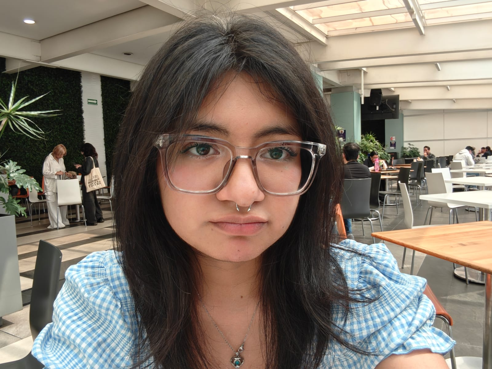
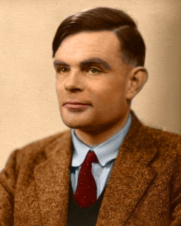
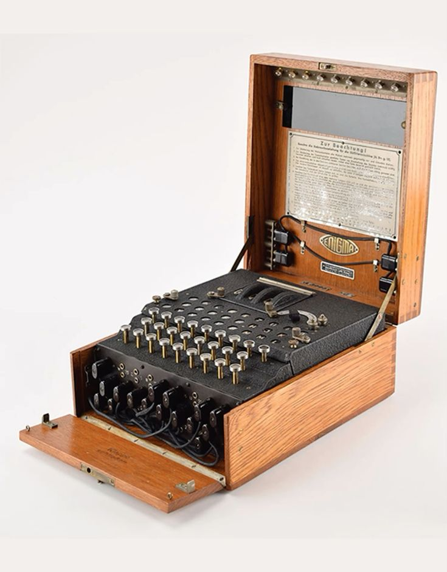
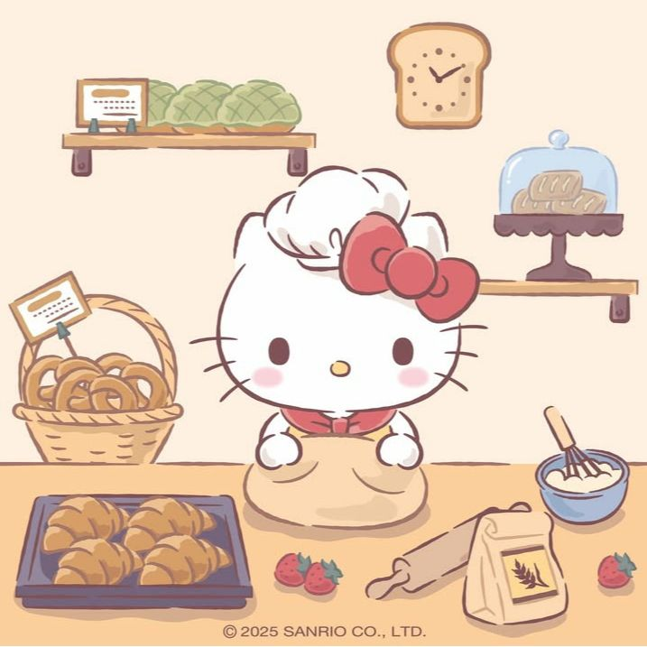
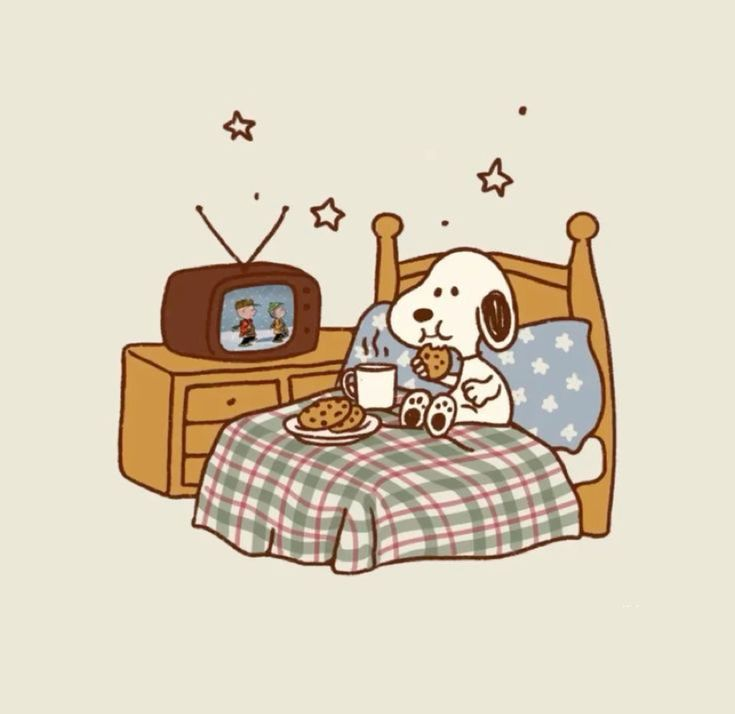

Mis Redes Sociales:
Discord GitHub LinkedInAquí puedes obtener mi información académica y mis llaves de seguridad:

Durante la Segunda Guerra Mundial, Turing trabajó en Bletchley Park, el centro de descifrado de códigos de Gran Bretaña. Fue el principal responsable de descifrar la máquina Enigma, utilizada por la marina alemana para cifrar sus comunicaciones.
Turing diseñó la "bombe", una máquina electromecánica que automatizaba el proceso de descifrado, logrando interceptar mensajes cruciales que cambiaron el rumbo del conflicto bélico.
Era un corredor de larga distancia de nivel casi olímpico. Trágicamente, en 1952 fue procesado por su homosexualidad y sometido a castración química. Falleció en 1954 tras morder una manzana con cianuro. Fue indultado póstumamente por la reina Isabel II en el año 2013.
Es universalmente considerado como uno de los padres fundadores de la ciencia de la computación teórica y la inteligencia artificial. Su conceptualización de la "Máquina de Turing" sentó las bases lógicas de lo que hoy conocemos como el algoritmo y las computadoras modernas.

Un poquito de lo que me gusta hacer en mi tiempo libre:

